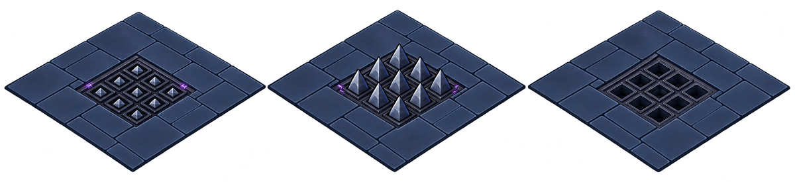
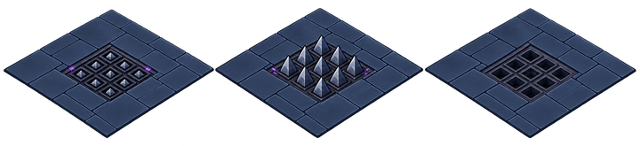
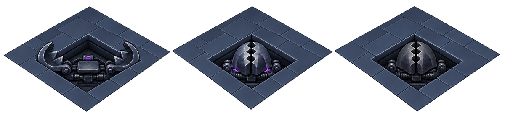
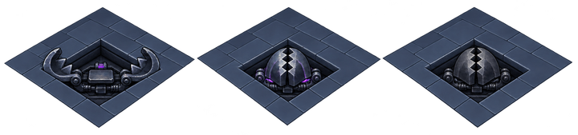
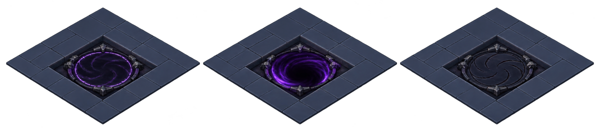
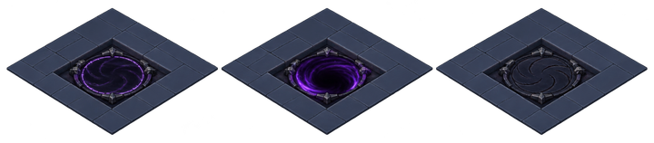

Le logement dans le sol reste la direction retenue. Cette passe remplace le métal gris granuleux et clarifie le mécanisme de l’Entrave.
Les trois états sont montrés ensemble. « Déclenché » est une proposition d’état transitoire ; il n’est pas encore animé dans le jeu. Ces nouvelles images ne sont pas intégrées.
Acier taillé, logements individuels et rails sombres.

Réduction indicative pour juger la lecture, pas une capture mobile.

Deux mâchoires articulées, une pédale et des ressorts.

Réduction indicative pour juger la lecture, pas une capture mobile.

Un sceau d’obsidienne en retrait dans le sol.

Réduction indicative pour juger la lecture, pas une capture mobile.
